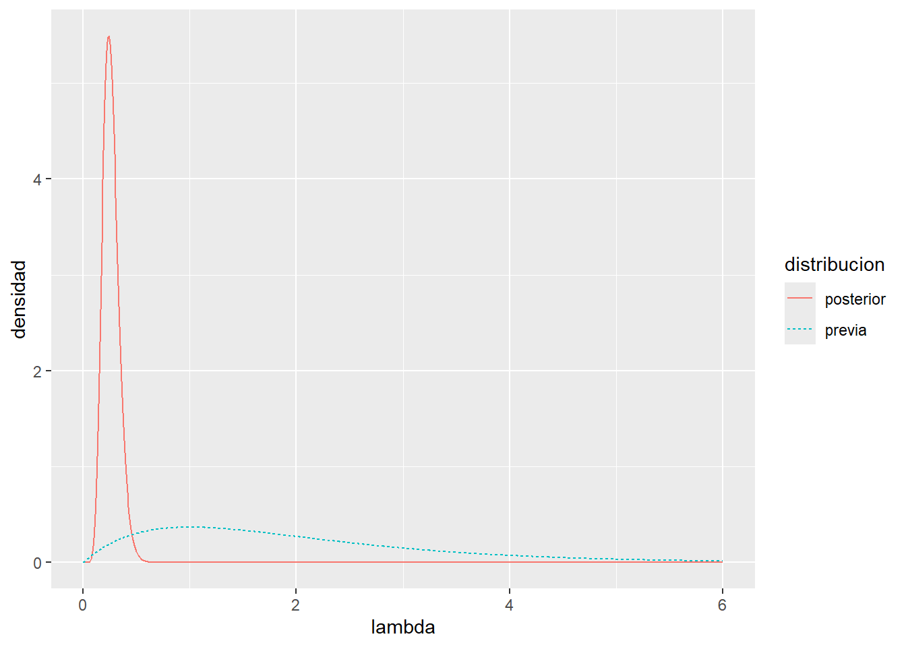

integrate(
function(lambda) (1 / lambda) * dgamma(lambda, shape = 12, rate = 46),
lower = 0,
upper = Inf
)4.181818 with absolute error < 1.4e-05\(Y_i\) = Tiempo de vida útil del componente electrónico \(i\) (en miles de horas)
\(Y_i \overset{\text{i.i.d.}}{\sim} Exp(\lambda)\)
\(p(y_i|\lambda) = \lambda e^{-\lambda y_i}\)
\(y = (y_1, ...,y_n)\)
Para demostrar que \(\lambda \sim Gamma(a,b)\) es conjugada debemos obersvar si la distribución posterior pertenece a la misma familia de modelos que la previa, entonces debemos verificar que, al combinar el modelo para los datos con una distribución previa Gamma, la distribución posterior pertenece también a la familia Gamma.
Utilizando el dato de que las \(y_i\) son iid, \[p(y|\lambda) = \prod_{i=1}^n{\lambda e^{-\lambda y_i}} = \lambda^n e^{-\lambda{\sum_{i=1}^n{y_i}}}\]
\[p(\lambda) \propto \lambda^{a-1} e^{-b\lambda}\] Usando la Regla de Bayes: \(p(\theta|y)=\frac{p(y|\theta)p(\theta)}{p(y)}\) \(p(\theta|y) \propto (y|\theta)p(\theta)\)
\[p(\lambda|y) \propto (y|\lambda)p(\lambda)\]
\[p(\lambda|y) \propto \lambda^n e^{-\lambda{\sum_{i=1}^n{y_i}}} \lambda^{a-1} e^{-b\lambda}\] Agrupando las potencias de \(\lambda\) y los términos exponenciales, obtenemos: \[p(\lambda|y) \propto \lambda^{(a-1+n)} e^{-\lambda(b + \sum_{i=1}^n{y_i})}\] \[\lambda|y \sim Gamma(a+n,\ b + \sum_{i=1}^n{y_i})\] De esta forma, la distribución posterior de \(\lambda\) pertenece a la misma familia de distribuciones que la previa, ya que ambas son distribuciones Gamma. Por lo tanto, la distribución Gamma es conjugada para el modelo Exponencial.
Para interpretar los parametros a y b de la distribución previa tenemos que recordar que \(n\) es la cantidad de componentes observados y \(\sum_{i=1}^n y_i\) es la suma de horas de vida util de todos los componentes en conjunto. Tomando en cuenta que \(a\) y \(b\) son parámetros relacionados con “datos previos”, podemos interpretar \(a\) como la cantidad equivalente de componentes observados previamente y \(b\) como la suma equivalente de sus horas de vida útil.
Con los siguientes datos:
\(n=10\)
\(\sum_{i=1}^n y_i = 45 \ (miles \ de \ horas)\)
\(\lambda \sim Gamma(2,1)\), osea \(a=2\) y \(b=1\)
Calcular la media posterior de \(\lambda\) y de \(E(Y) = 1/\lambda\)
Para la media posterior de \(\lambda\) debemos calcular \(E(\lambda|y)\):
\[ E(\lambda|y) = \frac{a+n}{b + \sum_{i=1}^n{y_i}} = \frac{2+10}{1+45} \approx 0.26\]
Para la media posterior de \(Y\):
\(E(E(Y)) = E_{\lambda/y}(1/\lambda) = \int_0^\infty(\frac{1}{\lambda})p(\lambda|y)d\lambda\)
Sabemos que con los datos dados \(\lambda|y \sim Gamma(12,46)\)
Claculamos \(\int_0^\infty(\frac{1}{\lambda})p(\lambda|y)d\lambda\)
integrate(
function(lambda) (1 / lambda) * dgamma(lambda, shape = 12, rate = 46),
lower = 0,
upper = Inf
)4.181818 with absolute error < 1.4e-05Graficar la previa y la posterior de \(\lambda\).
Utilizamos los datos del apartado anterior, sabemos que \(\lambda \sim Gamma(2,1)\) y \(\lambda|y \sim Gamma(12,46)\)
Creamos un vector con posibles valores de \(\lambda\)
lambda <- seq(0, 6, length.out = 1000)Calculamos las densidades
Para la previa:
dens_previa <- dgamma(lambda, shape = 2, rate = 1)Para la posterior:
dens_posterior <- dgamma(lambda, shape = 12, rate = 46)Creamos el dataframe con los datos a graficar:
datos_grafico <- data.frame(
lambda = lambda,
previa = dens_previa,
posterior = dens_posterior
)
library(tidyr)
datos_grafico <- pivot_longer(
datos_grafico,
cols = c(previa, posterior),
names_to = "distribucion",
values_to = "densidad"
)library(ggplot2)
ggplot(datos_grafico,
aes(x = lambda,
y = densidad,
linetype = distribucion,
color = distribucion)) +
geom_line()
La previa de Jeffreys está dada por \(p_J(\theta) \propto \sqrt{I(\theta)}\), donde \[I(\theta) = -E \left[ \frac{\partial^2}{\partial\theta^2}log\ p(Y|\theta) \right]\] es la información de Fisher.
\(Y \sim Binomial(n,\theta)\)
\[p(y|\theta) = \binom{n}{y} \theta^y (1-\theta)^{n-y}\]
\[log\ p(y|\theta) = log\binom{n}{y} + log(\theta)y + log(1-\theta)(n-y)\]
\[\frac{\partial}{\partial\theta}log\ p(y|\theta) = \frac{y}{\theta} - \frac{(n-y)}{1-\theta}\]
\[\frac{\partial^2}{\partial\theta^2}log\ p(y|\theta) = -\frac{y}{\theta} - \frac{(n-y)}{(1-\theta)^2}\]
\[-E\left[\frac{\partial^2}{\partial\theta^2}log\ p(y|\theta)\right] = \frac{n\theta}{\theta^2} + \frac{n-n\theta}{(1-\theta)^2} = \frac{n}{\theta} + \frac{n}{1-\theta}\]
\(I(\theta) = \frac{n}{\theta(1-\theta)}\)
\[p(\theta) = n^{1/2} \theta^{-1/2} (1-\theta)^{-1/2} \propto \theta^{1/2}(1-\theta)^{-1/2} \] \[\theta \sim Beta(1/2, 1/2)\]
Reparametrizar el modelo binomial usando \(\psi = log(\frac{\theta}{1-\theta})\), de modo que \[p(y|\psi) = \binom{n}{y}e^{\psi y}(1+e^{\psi})^{-n}\] Y obtener la distribución previa de Jeffreys\(p_J(\psi)\) para este modelo.
Para esto seguimos el mismo procedimiento que antes:
Aplicamos logaritmo a la distribución de los datos: \[log(y|\psi) = log\binom{n}{y} + \psi y -n log(1+e^{\psi})\] Derivamos respecto a \(\psi\) 2 veces: \[\frac{\partial}{\partial\psi}log\ p(y|\psi) = y - n(\frac{e^\psi}{1+e^\psi})\]
\[\frac{\partial^2}{\partial^2\psi}log\ p(y|\psi) = -n (\frac{e^\psi(1+e^\psi) - e^{2\psi}}{(1+e^\psi)^2}) = -n (\frac{e^\psi + e^{2\psi} - e^{2\psi}}{(1+e^\psi)^2}) = -n\frac{e^\psi}{(1+e^\psi)^2}\] Por último la esperanza queda igual a lo que ya obtuvimos, ya que no depende de y: \[I(\psi) = -E \left[ \frac{\partial^2}{\partial\psi^2}log\ p(y|\psi) \right] = n\frac{e^\psi}{(1+e^\psi)^2}\] Terminamos planteando la previa de Jeffreys: \[\sqrt{I(\psi)} = \sqrt{n\frac{e^\psi}{(1+e^\psi)^2}} =n^{\frac{1}{2}} \frac{e^{\frac{\psi}{2}}}{1+e^\psi}\] \[p_j(\psi) \propto \frac{e^{\frac{\psi}{2}}}{1+e^\psi}\] ## Parte c
Tomar la distribución previa obtenida en el inciso a) y aplicar la fórmula de cambio de variable \(\psi = log(\frac{\theta}{1-\theta})\) para obtener la densidad previa de \(\psi\), y comparar si es la misma que la obtenida en el inciso b).
Ahora, Hoff, el ejercicio 3.10 establece que para casos de cambios de variables, si tenemos que \(\psi = g(\theta)\) donde \(g\) es una función monótona de \(\theta\), y tenemos también \(h\) siendo la inversa de \(g\) de tal forma que \(\theta = h(\psi)\). Si \(p_\theta(\theta)\) es la distribución de densidad de \(\theta\),la distribución de \(\psi\) inducida por \(p_\theta\) está dado por:
\[p_\psi(\psi) = p_\theta(h(\psi)) \times |\frac{dh}{d\psi}|\]
Primero vamos a definir \(p_\theta(h(\psi))\):
En el inciso a) concluimos que la distribución previa es \(p_\theta(\theta) = n^{1/2} \theta^{-1/2} (1-\theta)^{-1/2}\), es decir una \(Beta(\frac{1}{2},\frac{1}{2})\)
Tomamos \(\psi = log(\frac{\theta}{1-\theta})\) que es la funcion \(g\) y depejamos \(\theta\)
\(e^\psi = \frac{\theta}{1-\theta}\) \(\theta = \frac{e^\psi}{e^\psi+1}\) Esta es la función \(h\)
Y ahora reemplazamos en \(p_\theta(\theta)\)
\[p_\theta(\frac{e^\psi}{e^\psi+1}) = n^{1/2} (\frac{e^\psi}{e^\psi+1})^{-1/2} (1-(\frac{e^\psi}{e^\psi+1}))^{-1/2} \propto (\frac{e^\psi}{e^\psi+1})^{-1/2} (\frac{1}{e^\psi+1})^{-1/2}\] Simplificamos: \[p_\theta(\frac{e^\psi}{e^\psi+1}) \propto (\frac{e^\psi+1}{e^\psi})^{1/2} (e^\psi+1)^{1/2} \propto \frac{(e^\psi+1)^{1/2}}{e^{\psi/2}} (e^\psi+1)^{1/2} \propto \frac{e^\psi+1}{e^{\psi/2}}\] Ahora calculamos \(|\frac{dh}{d\psi}|\):
\[\frac{dh}{d\psi} = \frac{d}{d\psi} (\frac{e^\psi}{e^\psi+1}) = \frac{e^\psi(e^\psi+1) - e^\psi e^\psi}{(e^\psi+1)^2} = \frac{e^\psi}{(e^\psi+1)^2}\] Como \(e^\psi>0\) para todo \(\psi \in R\) el valor absoluto se obvia.
\[p_\psi(\psi) \propto \frac{e^\psi+1}{e^{\psi/2}} \times \frac{e^\psi}{(e^\psi+1)^2} \propto \frac{e^{\psi/2}}{e^\psi + 1}\] Comparando este resultado con el obtenido en el punto b: \[p_j(\psi) \propto \frac{e^{\frac{\psi}{2}}}{1+e^\psi}\] Comprobamos que se llega a la misma distribución previa.
…